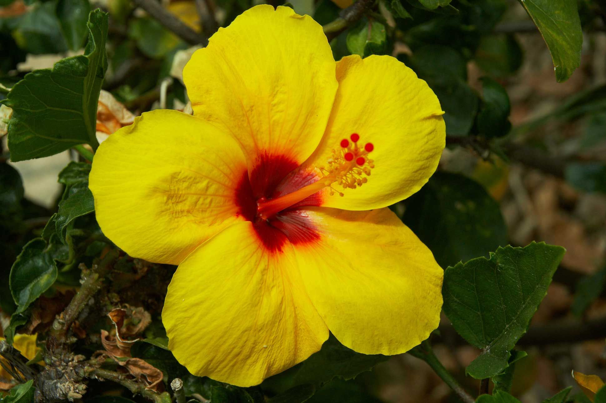
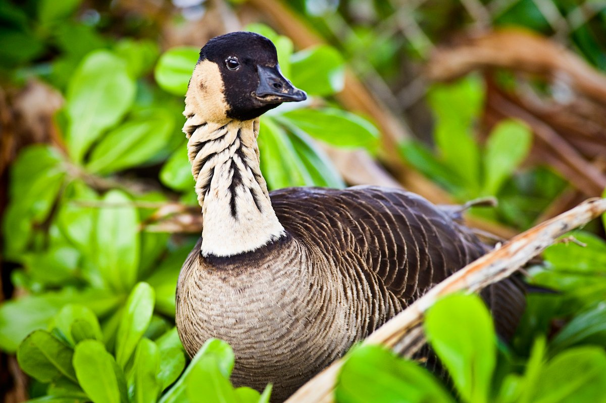
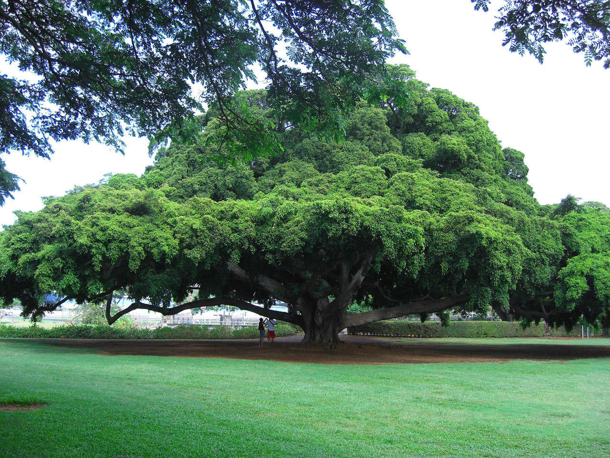

Hawaii (Hawaiian: Hawai‘i) is a group of volcanic islands in the central Pacific Ocean. The islands lie 2,397 miles from San Francisco, California, to the east and 5,293 miles from Manila, in the Philippines, to the west. The capital is Honolulu, located on the island of Oahu. The islands were annexed by the United States in 1900, and as a U.S. territory saw population expansion and the establishment of a plantation system for growing sugar cane and pineapples. On the morning of December 7, 1941, hundreds of Japanese fighter planes attacked the American naval base at Pearl Harbor near Honolulu. The surprise attack destroyed nearly 20 vessels, killed more than 2,000 American soldiers and propelled the United States into World War II. Hawaii became the 50th U.S. state on August 21, 1959.
| Date of Statehood | Capital | Population | Size |
|---|---|---|---|
| August 21, 1959 | Honolulu | 1.46 million | 10,926 square miles |
Ua Mau ke Ea o ka ʻĀina i ka Pono (“The life of the land is perpetuated in righteousness”)
Pua Aloalo (Yellow Hibiscus)
Nene
Kukui (Candlenut)
Interesting facts